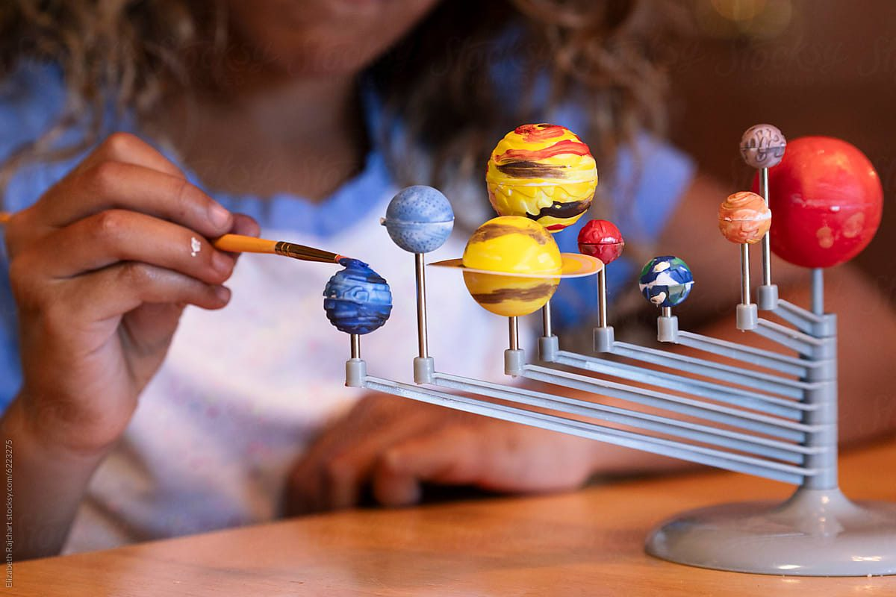

Every Subject · Through What They Notice
You’ll know.
Built from what they’re into.
Recorded so the year adds up.
She’s been building the solar system all week.
Some weeks the lesson finds you.
Guess what everyone learned that week?
Every plan comes with a seat for someone else. The Open Seat →
Reptile habitats. Where do turtles sleep in winter?
Estimate a turtle’s age by counting shell rings.
Cold-blooded vs. warm-blooded: what’s the difference?
Chart the Galápagos Islands. Find the giant tortoises.
Watercolor turtle shell patterns. Every shell is unique.
Turtles need calcium to grow their shells. What foods build strong human bones?
A prompt gives you a lesson. Once.
We built an engine that remembers what you covered three weeks ago. We know your 6-year-old and 9-year-old aren't in the same place. And we built real-world science and literacy tools directly into the foundation.
Connecting backyard turtles to the Galápagos Islands.
"Remember when we learned how plates crash together? That's what pushes the magma up."
Same theme. Matched to each child's age and reading level. Right now, at the same table, each child is doing something different with the same idea.
One shared obsession for the whole house. The dinner table is back.
No hiding behind clicks. Just the answers.
Families with children ages 3 to 12. Activities are matched to each child's age, reading level, and stage.
Wizkoo is strictly secular. It is science-based, fact-based, and built for curious families.
No, you do not need to be a teacher. Every activity includes what to do, how long, and what done looks like.
Yes, you can use this for weekends, after school, or summer. It's the same engine, running on your schedule.
A curriculum only tells you what to teach; a system builds the entire week around your children. It adapts to their ages, reading levels, and the theme you chose. Week 8 references Week 3. Every subject connects through a single thread. Nothing is taught in isolation.
Wizkoo uses AI strictly for personalization, while educators design the core methodology. You review everything before your children see it.
Every week you'll receive an Orbit Report showing exactly what your child learned. It does not track screen time logged; it tracks actual facts, vocabulary, and discoveries.
A prompt gives you a single lesson; Wizkoo gives you an entire system. It includes multi-age differentiation, spiral learning across weeks, Atlas and Elementum built in, and plans that remember last month. You type one theme, and your week is planned in about five minutes.
Their first name, age, and state. Whether they move while they think or settle in. What they can't stop talking about right now. And what they've actually done — blocks finished, concepts met, hours logged.
We keep the last part on purpose. It's how next week starts where this one ended instead of starting over.
Everything we ask is something you've watched happen. No labels, no diagnoses, no test scores.
You can see all of it, change any of it, or delete it, anytime.
No. We don't sell your information or share it with anyone.
Wizkoo costs $50/month or $499/year. Your first plan is free, and no credit card is required to try it.
You can cancel in one click directly from your account settings. There is no phone call, no chat, and no questions asked. Your child's game progress stays on their device even after you cancel.